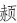
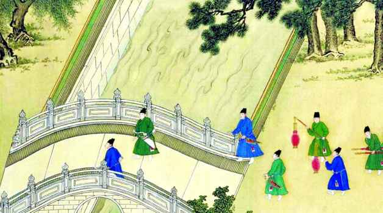
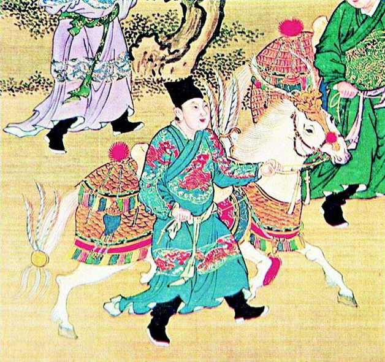
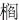

产生吸引力，但这样的对象、这样的机会，实属偶然；大多数情形下，她所能结识或者说“勾搭”上的人物，只是宫中与她地位相等的半真半假的男人——太监。而以这种“男人”，所谓“满足”，实在是退而求次、聊胜于无。不过，她仍然尽力在其中挑选“强者”。魏忠贤最终走近她，正乃这样一个结果。
产生吸引力，但这样的对象、这样的机会，实属偶然；大多数情形下，她所能结识或者说“勾搭”上的人物，只是宫中与她地位相等的半真半假的男人——太监。而以这种“男人”，所谓“满足”，实在是退而求次、聊胜于无。不过，她仍然尽力在其中挑选“强者”。魏忠贤最终走近她，正乃这样一个结果。中国历史当中，唱上主角的女人本来不多；这有限的一群女人之中，客氏其人虽不能说前无古人，但的确后无来者[43]。因此，在描述天启年间中国几位重要角色时，为示隆重，我们特安排她首先出场。
客氏是什么人？朱由校的乳母。在下人里面，奶妈地位一般会比较高一些，但，再高也是下人。可眼前这妇人，不特没有任何人敢把她当下人看，简直比主子还主子，乃至以奶妈之身，而享不亚于皇后的尊荣。三百六十行，行行出状元，古往今来奶妈，她当之无愧可以坐头把交椅，如果给这一行点状元，非她莫属。
以往史家给予她的地位，与她的实际作用比，很不相当。提起魏忠贤，今日但凡略读过一点史的，无人不知不晓。然而，魏忠贤身边站着的这个女人，名头却相差甚远。不公平。
没有客氏，根本也不会有什么魏忠
贤。在取得客氏芳心之前，魏忠贤不单是个小毛虫，只怕在宫中还怎么混下去都很成问题——光宗一死，他把宝押在李选侍身上，追随并撺掇后者将朱由校扣为人质，事败，被杨涟等穷追不舍。客氏是他成功从李选侍阵营跳槽到朱由校阵营的踏板，更是他打开朱由校宠任之门的钥匙。
他们组成了这样一个三角关系：朱由校无比依赖客氏，魏忠贤通过客氏搞定朱由校，客氏则从魏忠贤身上寻求慰藉。这三个人之间，客氏是纽带和支点：“忠贤不识字，例不当入司礼，以客氏故，得之。”[44]若非客氏，朱由校才不去理会魏忠贤是哪根葱，晚明历史就得改写。
她是河北定兴人氏，嫁夫侯二，生有一子名国兴。十八岁，被选入奶子府候用。崇祯元年正月，刑部奏呈的《爰书》（罪状书）称，是年客氏四十八岁[45]。以此推算，则她被征选那一年，当为万万二十六年（1598），其时距朱由校出生尚有七年。这里稍有疑惑，盖因明宫选用奶口，惯例为十五至二十岁之间女性，而客氏充任朱由校奶妈时，已年届二十五。或者，《爰书》抄写有误亦未可知，比如将“年四十二”误为“年四十八”，是有可能的。但这无关紧要，总之，客氏大约年长朱由校二十至二十五岁。
入选奶子府两年后，丈夫侯二死掉，客氏成了寡妇。这个情节很重要，在许多事情上可能都有关键意义。很多记载指出，这是一个性欲强劲的女人。《明鉴》说：“客氏性淫而很（狠）。”[46]《稗说》给出了有关她形貌习性的更详细的描述：
年少艾，色微，丰于肌体，性淫。[47]
“少艾”，是美妙的意思，形容年轻漂亮的女子。这句话说，客氏青春貌美，肤色微微泛红，生得非常丰满，而且性情放荡。这不大像是在故意“妖魔化”客氏。人之性欲强弱，生而有别，跟遗传、身体条件都有关系；不单男性，女性亦有天生性欲亢奋者，即便所谓“三从四德”时代也是如此，这很正常。从所描述的体征来看，客氏血色盈旺，生命力充沛，又正值精壮之龄丧夫，对于这种女人来说，孤独当远比寻常人难以忍耐。
她用她的身体语言，对此做着证实。她对自己容颜，始终保持强烈并且过度的关注。就像沉迷于性事的男人会借助春药延长性机能、制造和获得让其自信的幻象一样，作为女人，客氏为了保持容颜也乞灵于超自然、玄虚、不可知的诡秘偏方。其中最怪异的例子是，人到中年的客氏，“常令美女数辈，各持梳具环侍，欲拭鬓，则挹诸女口中津用之，言此方传自岭南祁异人，名曰‘群仙液’，令人至老无白发。”[48]这所谓“群仙液”，肯定是荒诞的；但它对于客氏却构成巨大的想象价值——年轻貌美女子蕴含的性优势，被神秘化为她们体液具有某种青春元素，而汲取这样的元素则被想象成可以阻止衰老。透过这一举止，我们洞见了客氏的肺腑，那是一颗疯狂想要吸引男人好感的心灵。
这女人跟魏忠贤结成联盟，很可能跟政治毫无关系，而仅仅是出于性的需要。这，也许是她与其他在历史上出人头地的著名女人之间的最大不同。吕后、武则天、慈禧，都有强烈的权力欲，都在政治上有自己的抱负。但从客氏一生，似乎并不存在这根线索。尽管她对政治施加了很多很重要的影响，然而我们并未发觉她对权力有什么个人渴望。她非常像生活中那种意外地成为杀人犯同伙的女人，本身对于杀人没有冲动，可是却不在乎成为某个嗜血残暴男人的情妇，并且但能讨这男人高兴，就绝不拒绝充当杀人同谋。
我敢于肯定地说，魏忠贤结交客氏另有所图，客氏却仅仅是为着能与他贪欢。这并不可耻，相反，毋如说这个女人勇敢地亮出了她脆弱的那一面。她只是需要一个可以满足自己的男人。但以她的环境和身份，可选择性实在有限。前面讲过，她成为政治明星后，曾对大学士沈产生吸引力，但这样的对象、这样的机会，实属偶然；大多数情形下，她所能结识或者说“勾搭”上的人物，只是宫中与她地位相等的半真半假的男人——太监。而以这种“男人”，所谓“满足”，实在是退而求次、聊胜于无。不过，她仍然尽力在其中挑选“强者”。魏忠贤最终走近她，正乃这样一个结果。
作为刑余之辈，太监失去了男人性生理的基本功能，不过内中情形却并不如外人设想的那样，全然死灰。比如，身体残损，而男人心理仍有遗存。也有一些奇怪不可解的表现，现成的例子，是因撰写了《酌中志》而名气很大的天启、崇祯间太监刘若愚，一直蓄有胡须，《旧京遗事》记曰：“若愚阉而髯，以此自异。”[49]依理，去势之人不再分泌雄性激素，作为副性征的胡须是不会生长的了，但刘若愚却一直长有胡须，且颇茂盛，以至于“髯”，难怪他会“以此自异”。更有手术做得不彻底，而在体内留了“根”的，魏忠贤据说正是如此——“虽腐余，势未尽。”[50]怎么一种“未尽”法？想必是生殖器没了，但从身体到态度仍剩余一些男人特点，以至于进宫之后魏忠贤还有嫖妓的经历[51]。
我们探讨以上几种可能性，作为太监辈仍有兴趣发展自己的“性关系”的解释。不管出于何种情形，也不管这种关系或生活与健全人有多大区别，太监存在性需求这一点是毫无疑问的，并且十分普遍，这也不单明代独然，至少自汉代起，就有记载。《万历野获编》“对食”一条，综述甚详。它提到三种表现：“中贵授室者甚众，亦有与娼妇交好因而娶归者，至于配耦（偶）宫人，则无人不然。”或者在外娶妻，或者与妓女交往，或者在宫内与某个宫女结对——最后一种尤普通，“无人不然”，谁长久找不到对象，还被人看不起、笑话（“苟久而无匹，则女伴姗笑之”）。还解释说，这种情形在汉代叫“对食”，在明代叫“菜户”，都是双方一起过日子的意思。此实为中国社会的一种“特种婚姻”，虽然就像沈德符所说“不知作何状矣”，外人对其细节，诚无从设想，但重要的是，太监、宫女之间对“对食”的态度，其正式程度，与外界夫妇毫无不同。“当其讲好，亦有媒妁为之作合。”结合之后，彼此依存而至终老，甚至发展出极深的感情。沈德符曾在某寺亲见一位太监为其已故“对食”对象所设牌位，“一日，其耦（偶）以忌日来致奠，擗踊号恸，情逾伉俪。”
如果魏忠贤当真“势未尽”，则大约使他在同侪之中，有相当的优势；何况他对房中术还颇有心得[52]——因为他属于“半路出家”，自宫而成阉人之时已年逾二十，有足够时间去学一肚皮男盗女娼，这是那些自幼净身入宫的太监们望尘莫及的。客氏与他结识，缘于魏忠贤给王才人——朱由校生母——“办膳”之时。一个是奶妈，一个厨工，工作关系很近。不过，客氏已经名花有主，“对食”对象名叫魏朝，是大太监王安的亲信，负责照顾小朱由校的一切事宜，也就是客氏的顶头上司。而魏忠贤与魏朝是铁哥儿们，拜过把子。据刘若愚讲，魏朝忙于应付差事，“多不暇，而贤遂乘间亦暗与客氏相厚，分朝爱焉。”[53]在魏忠贤，是第三者插足；在魏朝，则是引狼入室。当时魏朝是小负责人，魏忠贤身份地位远远不及，而客氏暗渐移情于他，应该不是要另攀高枝。魏忠贤的本钱是“身体好”，客氏看中的就是这一点。刘若愚对二魏的形容分别是：魏朝“佻而疏”，魏忠贤“憨而壮”。两相比较，魏忠贤更显雄性。再加上通晓房中术，一试之下，客氏于此在二人间立分出高低。对客氏一类女人来说，这比什么都实惠。
总之，客氏死心塌地转投魏忠贤的怀抱。二魏之间，则龃龉益重，经常“醉骂相嚷”。一次，已是丙夜（三更）时分，又闹起来，而且很严重，惊动了朱由校。这时朱由校刚登基不久。他把二魏以及七八个大太监召到跟前，“并跪御前听处分”。旁人都知道原委，对朱由校说：“愤争由客氏起也。”朱由校于是问客氏：“客，你尔只说，尔处心要著谁替尔管事，我替尔断。”客氏当即表示，愿意魏忠贤替她“管事”。这样，朱由校当众下达“行政命令”，魏忠贤“始得专管客氏事，从此无避忌矣”。[54]
不少人把这件事理解为朱由校将客氏“许配”给魏忠贤。这不可能。他询问客氏时用词很清晰，是“管事”。盖因宫中女人，有诸多事情自己无法办或不便办，需要托付给某个太监，实即类似找一个保护人。所谓“管事”，当系这种意思。朱由校想必知道存在这种惯例，他所做出的决定，也只是将来客氏之事，交给谁办。如果把这决定，理解成替客魏做媒，一是违反祖制，朱由校断然不敢，二来也与他跟客氏之间隐秘奇特的关系相矛盾。
种种迹象表明，朱由校与其奶妈之间，存在秘密。
抱阳生《甲申朝事小纪》直指其事曰：
传谓上甫出幼，客先邀上淫宠矣。[55]
这句话说，朱由校刚刚进入少年，亦即性方面刚刚开始发育，客氏便引诱或教习他学会男女之事。换种说法：客氏是朱由校的第一个女人。
抱阳生是清代嘉庆、道光间人士。明季史料，因为清初统治者的查禁，多有焚毁、窜改和破坏，到清中期，文网稍弛，一些劫后幸存、复壁深藏的材料，才得再见天日。《甲申朝事小纪》，就是专门搜集、整理明清之际野史文献的成果。[56]关于朱由校与客氏是否有私情，以往的叙述藏头露尾、语焉不详，这里头一次完全说破。不过，作者还是实事求是地注明了得自于传说。
真相如何，到目前为止，谁都没有把握。然而，有很多侧面的依据。
首先，除开未成年而做了皇帝，否则，皇帝极少在大婚之前保持处男之身。事实上对此没有禁令，一般来说，脱离童年后皇家继承人可以自己宫内的范围，任意与感兴趣的女子发生性行为，这被视为将来婚育的启蒙和必要准备。清代甚至规定，大婚之前，从宫女中选年龄稍长者八名“进御”，作为婚后性生活的实习。虽然后妃必须是处女，但皇帝或太子的第一个女人却不必是后妃。具体到客氏与朱由校的私情，这件事从制度上是允许的，虽然客氏年长朱由校二十来岁，但只要朱由校愿意，他俩私行云雨之事，完全谈不上犯忌，但也没必要张扬，这是皇家继承人有权保持的秘密。
其次，朱由校本人的反常表现。
天启元年四月，朱由校大婚。对帝王来说，大婚的意义不只是娶妻，它还意味着宫庭秩序的新建与调整。对外，皇后母仪天下，对内，则皇宫从此有了“内当家”，她负有关怀皇帝从身体健康到饮食起居的全部责任；皇帝将全面开始新生活，过去的习惯和形态应该宣告结束。简言之，大婚后，奶妈客氏不可以继续留在宫里，否则就是笑话。群臣一直在等待下诏客氏离宫的消息，然而悄无声息。
两个月后，大家看不下去了。六月二十四日，山西道御史毕佐周上疏要求客氏离宫。毕佐周这道奏折，并非孤立和偶然，恐怕事先许多朝臣就此有所沟通协调，因为紧接着第二天，大学士刘一燝就领衔，也递上同主题的疏文。刘一燝等没有把话讲得太刻薄，但仍写下关键的一句：“（对客氏应该）厚其始终而全其名誉。”[57]改成大白话，即：客氏应该退休，为此怎么厚赐她，给她多大物质上好处，全没关系；重要的是，保住她的名声。虽然说得比较含蓄，聪明人也都能体会到，话里有话。

明代阉祸为历代之最。
中国历史上因宦官而起的祸乱，十分严重，大朝代中秦、汉、唐、明，都十分突出。然皇权本质所在，明知如此，仍赖此辈。此图所绘，即明代大内情形。一组太监正在过桥，有执弓箭者，有腰悬刀剑者，有提宫灯者，有抬肩舆者，栩栩如生。

鲜衣怒马的太监。
端详此画，无论人、马，遍体上下真是奢华已极。而惊叹之余，很难不意识到在奢华后面，该是怎样的骄横无忌、作威作福。
朱由校没文化，但人不笨，不会听不出弦外之音。可是他仍然“顶住压力”，不肯送客氏出宫。他找了个借口，推说父亲丧事尚未料理完毕，而“三宫年幼”，颇需客氏的协助；等丧事结束，“择日出去”。[58]
用这借口，又拖了二个多月。九月中旬，光宗丧事彻底结束。刘一燝旧事重提，请皇帝信守诺言，送客氏出宫。不得已，客氏于九月二十六日出宫。是日，朱由校丢魂落魄，食不甘味，以至饮泣。第二天，他宁肯牺牲皇帝的尊严，传旨：“客氏时常进内，以宽朕怀，外廷不得烦激。”[59]
御史周宗建对朱由校的举动做出如下评价：“不逾宿而宠命复临，两日之间，乍出乍入，天子成言，有同儿戏。”[60]侍郎陈邦瞻、御史徐杨先，吏科三位给事中侯震旸、倪思辉、朱钦相也各自上疏。朱由校大怒，将倪、朱降三级、调外任。刘一燝、周嘉谟、王心一等纷纷谏阻，不听，反将王心一与倪、朱列同为罪。朝臣群起抗争，朱由校再拿御史马鸣起、刘宗周开刀，分别罚俸一年、半年。总之铁了心，谁再提客氏离宫之事，我就砸谁的饭碗。
可以说，朱由校是不惜一切，捍卫客氏自由出入宫禁的权利。他自己打出的旗号，是思念乳母，但实际要给予客氏的特权远超出这样的需要。如果出于思念，隔一段时间宣召她进宫见上一面，不是问题，没有人会反对；群臣想制止的，是客氏不受任何限制想来就来、想去就去。反过来，朱由校不顾脸面、坚决打压舆论，说穿了，也不是出于慰己对乳母的思念之意，同样是想达到让客氏不受约束地随意出入宫禁的目的。他深知，这是不能退让的；一旦退让，他和客氏之间就果真只剩下思念了。
他已十七岁，早非离不开妈妈怀抱的吃奶的孩子。即便用“母子情深”解释，似乎也大大超出了一个孩子正常的对母亲的依恋。我们很少听说一个人会以“朝朝暮暮”的表现与方式，去爱自己的母亲，倒是屡屡在热恋中的情侣身上才看见这种情态。
第三，外界的反应和解读。
朱由校与客氏的所谓“母子情深”，外界一致感到无从理解，越于情理以外。喜、怒、哀、乐、忧、惧，弗学而能。人在基本情感上，是相通的；如果是正常的情感，不会找不到理解的途径。但朱由校对客氏的情感，显然脱离了他所声称的那种范围。既然情感特质与口头标称的不一致，大家自然会依据经验对其真实性，做出自己的分辨和判断。
毕佐周敦促客氏离宫时，话就说得很不好听：
今中宫立矣，且三宫并立矣，于以奠坤闱而调圣躬自有贤淑在（家里已经有女主人了也），客氏欲不乞告将置身何地乎？皇上试诰问诸廷臣，皇祖（指朱由校祖父万历皇帝）册立孝端皇后（万历皇后王氏）之后，有保姆在侧否？法祖揆今，皇上宜断然决矣。……若使其依违宫掖，日复一日，冒擅权揽势之疑，开睥睨窥伺之隙，恐非客氏之自为善后计，亦非皇上之为客氏善后计矣。[61]
话不好听，不在于“有保姆在侧否”这一句所含的讥讽之意，而在“开睥睨窥伺之隙”所暗示的东西。“睥睨”，侧目而视,有厌恶或高傲之意；“窥伺”，偷觑、暗中察看和等候。什么事情能够引起并值得外界这样？当然不是“长这么大了，还离不开保姆”——仅此不足以引起这种反应——而必是更隐秘更不足道的事。对此，毕佐周虽不着一字，但上下文语意甚明。“奠坤闱而调圣躬自有贤淑在”：宫中妇女界的秩序已经确立，陛下的身体明明有人名正言顺地来负责。这话，一下子把客氏问题提升到“谁主后宫”的高度来议论，所指系何，难道还不清楚？奶妈陪皇帝睡过觉不算什么；可一旦把这么卑贱的人摆到后宫女主人的位置上，众人可就一定是会“睥睨”和“窥伺”的。
朱钦相索性斥客氏为“女祸”，把客氏与关外女真并论，列为当朝两大威胁。他喊出口号：
欲净奴氛，先除女戎！[62]
意谓客氏与女真人同为朝廷两大敌。他称客氏的存在，“传煽流言”、“浊乱宫闱”，批评朱由校“忧东奴而忘目前之女戎，所谓明不能见目睫也”，就像睫毛离眼睛最近，眼睛却根本看不到它。“传煽流言”、“浊乱宫闱”是什么意思，相信没有不明白的，所以朱由校览章也羞恼无地，斥责朱钦相“逞臆姑（沽）名”。
客观讲，朱钦相恐怕的确属于“逞臆”，因为他不可能掌握事实；但他的猜度，仍旧符合一般人对这种情形的基本判断。刘若愚也在《酌中志》里提到，当时人们对朱由校、客氏的神秘关系，普遍存在质疑，谣言纷纷：“倏入倏出，人多讶之，道路流传讹言不一，尚有非臣子之所忍言者。”[63]何为“非臣子之所忍言者”？无非“那种事”罢了。有人在诗里写道：“纱盖轻舆来往路，几人错认是宫嫔？”语涉讥讽，形容客氏在紫禁城的待遇和风光程度，路人遇之，几乎忘了来者是老妈子，还以为是皇帝所爱的哪个小美人呢。
《越缦堂读书记》转述的一个故事，更精彩。道是有段时间客氏跟大学士沈相好，为此经常出宫回到私宅与之幽会，颇冷落了魏忠贤。魏忠贤怎么办呢？也有高招。“归未旬日，忠贤必矫旨召入。”[64]列位看仔细了——魏忠贤拆散客氏与其情敌的办法，是假传朱由校旨意催其回宫（那时魏忠贤已经很牛，可以假传圣旨了）！这招够损，借力打力：老魏我叫你来，你可以不回，小朱想你，你也敢不回么？可见魏忠贤这个人脑子蛮好使的，懂得以夷制夷的道理。
第四，客氏自己所采取的姿态。
人，都是有自我意识的。自我意识，由主体的自我评价和社会评价两方面内容构成；后者包含人的社会地位、所拥有的权力财富、外界特别是来自至爱亲朋的舆论和态度。人一生行事，皆下意识地遵循于自我意识，采取相应言行，一举一动均表现并符合于其对自己角色的认识，这是一定的。
故而，我们虽不掌握客氏与朱由校之间的真实秘密，但客氏所不自觉地通过行为态度呈示出来的自身角色选择和定位，还是能透露不少的消息。
当时目击者刘若愚的叙述应该是第一手的，仍以此为据。在下面的讲述之前，刘有两句感慨，一句：“夫以乳媪，俨然住宫”，另一句：“僭妄殊宠极矣”。
头一句针对客氏住咸安宫而发，一个老妈子，竟然单独拥有一座属于自己的宫殿，这种地位唯后妃才有。第二句感慨有点言不由衷，因为客氏享受的待遇并非她擅自窃取，而是朱由校堂而皇之所给予，完全合法，何谈“僭妄”？然亦可理解，刘若愚不好归咎于小朱皇上，只得批判客氏“僭妄”。而“殊宠极矣”则是直抒胸臆了，表明了客氏所受的对待带给他的真实强烈感受。发完两句感慨后，刘若愚切入非常细节化的描述：
按自天启元年起，至七年止，凡客氏出宫暂归私第，必先期奏知，先帝传一特旨，某月某日奉圣夫人（泰昌元年九月二十日，朱由校登基不过半月，封客氏以此爵号）往私第云云。至日五更，钦差乾清宫管事牌子王朝宗或涂文辅等数员，及暖殿数十员，穿红圆领玉带，在客氏前摆队步行，客氏自咸安宫盛服靓妆，乘小轿由嘉德、咸和、顺德右门，经月华门至乾清宫门西一室，亦不下轿，而竟坐至西下马门。凡弓箭房带简管柜子，御司房、御茶房请小轿管库、近侍、把牌子、硬弓人等，各穿红蟒衣窄袖，在轿前后摆道围随者数百人，司礼监该班监官、典簿、掌司人数等，文书房官咸在宝宁门内跪叩道旁迎送。凡得客氏目视，或颌之，则荣甚矣。内府供用库大白蜡灯、黄蜡炬、燃亮子不下二三千根、轿前提炉数对，燃沉香如雾。客氏出自西下马门，换八人大围轿，方是外役抬走，呼殿之声远在圣驾游幸之上，灯火簇烈照如白昼，衣服鲜美俨若神仙，人如流水，马若游龙。天耶！帝耶！都人士从来不见此也。
读罢，便轮到我们感慨了。这样的排场，是一个奶妈所应有的么？“凡得客氏目视，或颌之，则荣甚矣”，“呼殿之声远在圣驾游幸之上”……我们忍不住想问一句：客大嫂，你当自己是谁？
这，只是客氏回一趟家的排场。一年三百六十五天，天启皇帝在位七年；七年当中，客氏耍过多少威风，又到底把威风耍到何种地步，真的是无论怎么想象，都不过分了。种种招摇之中，多少是朱由校主动降恩赐予的，多少是客氏“当仁不让”自己伸手要来的？以朱由校之颟顸，大约后者居多——“僭妄”说若用在这个意义上，就比较好理解。本来不该、不配的，也主动索取，而朱由校对她又有求必应，于是就弄到了“都人士从来不见此也”的地步。
这叫做“恃宠”。但恃宠也有形形色色。比如，要官要权，讨求田亩钱财，胡作非为、仗势欺人，一人得道、鸡犬升天……这些比较常见的恃宠表现，在客氏可以找到，但并不突出。她的恃宠，似乎更注重在身份和排场上做文章，特意让宫里宫外的人们看见，小朱对她的情意不单不在后妃之下，甚而还在其上。刘若愚所述的那个场面，很有盛妆游行的味道；设想一下，这么一支浩浩荡荡的队伍，以顶级规格，从咸安宫出发，经多座宫门，特别是还路过乾清宫，在半个紫禁城炫耀一番，不是示威是什么？兴许，只差高呼口号了：“当今天子的亲密战友客氏同志万岁！”
可以把每年定期举行的这种盛妆游行看作客氏的行为艺术，也可以把它看作具有客氏特色的政治表达。不平则鸣。盛妆游行就是客氏一种“鸣”的方式。她的不平在于，自己深为皇帝所爱，但地位却仅是一个老妈子；有的女人，皇帝内心对她不见得怎么样，却占据着“三宫”，享受天下的尊崇。于是，她借助游行，展现一种真相——为自己，也针对整个后宫的并不“合理”的秩序。她把这项活动，坚持不懈搞了七年，从朱由校登基和大婚以后开始，直到他死掉，每一年都搞那么几次，以免人们忘掉这个现实，或者不断加深人们对这个现实的认识。除此以外，她还在其他她看重的方面，努力发展自己与后妃们相当的待遇，后妃所享有与配备的，她都依样来一份，后妃的生活方式怎样，她全盘照搬。例如“红萝炭”，“皆易州山中硬木烧成……气暖而耐久，灰白而不爆”[65]，本属特供帝后寝宫（乾清、坤宁）冬季取暖之物，客氏却也如两宫例取用。
当然，这是我对于史料的阅读，史料本身不曾出来提示它背后的含义。读史读史，如只读字句，读不出字句所述人或事的情节逻辑和心理逻辑，或者不知将史料排比起来，用整体阅读的方法加以复原、找到关联，是很难走进历史的，就好似找矿者不能发现矿脉一样。
对客氏，不单要看到她做出了怎样的举动，还要思索她为什么会有这样的举动，不单要注意她的一个举动，还要注意她别的举动、注意这些举动是否存在一致性。
客氏对天启皇后张氏，流露出极强烈的嫉妒心，是确凿无疑的。从大婚那天起，客氏就没有一日终止过对张氏的嫉妒。后者在生活上受到各种刁难，甚至于“匕箸杯碗”等日常用具也不供应[66]。这种嫉妒，远不止乎日常细节，它有时会发作成为丧心病狂的行为。
张氏乃河南祥符县生员张国纪之女，虽不出身名门望族，但也是读书人之后，知书达礼，端庄文静，入主中宫后，张氏的教养给所有人留下深刻印象，她经常在坤宁宫举行诗歌朗诵会，挑选文慧的宫女，吟诗歌赋。粗鄙野俗的客氏大受刺激。为泄忿，客氏捏造谣言，称张氏并非张国纪亲生，她真正的父亲乃是“重犯孙二”。这当然是信口雌黄，然而只要客氏及其同伙魏忠贤乐意，他们完全有能力无中生有，只是由于客氏的老母亲劝阻，加上这个团伙的核心成员之一司礼太监王体乾反对，终未掀起巨案。但事件本身，仍将客氏以皇后为“对手”的心态表露无遗，她所感受到的不平衡，不仅是地位上的，也延及彼此出身与教养的差异；她期待通过构撰张氏乃罪犯之女的谎言，将张氏从“淑女”身份拉下马来，降低到与她平行的位置。
然而，这尚非最疯狂的报复。天启三年，张氏怀孕，这是朱由校的第一个儿子，然而婴儿未曾出世，即被妒火中烧的客氏设法流产。正史记曰：
三年，后有娠，客、魏尽逐宫人异己者，而以其私人承奉，竟损元子。[67]
民间史的叙说，具体一些，涉及了手法：
天启时，客氏以乳母擅宠，妒不容后有子。……及张后有孕，客暗嘱宫人于捻背时重捻腰间，孕堕。[68]
派去的杀手，显然是穴位专家，以按摩为名，拿捏关键穴位，神不知鬼不觉导致张氏流产。流产时应该已是怀孕晚期，否则不会辨认出流产的胎儿为男性。
不过，客氏的疯狂举止，并不表示她对皇后之位心存觊觎，图谋取而代之。把这种野心强加于她，并不符合实际。尽管她内心许多地方失去理智，但在这一点上她绝不可能发生错觉，即皇后宝座会与她这种人有任何联系，就算整倒整死张氏，继而登上这个位子的，也终将是她以外的某一个人。所以，她对张氏的陷害与打击，与政治无关，只是纯粹女人间的情仇恩怨。引导她走向疯狂的，是两种来自女性本能的力量：嫉妒和潜意识。对于女人来说，嫉妒可以是无目的的，只要同性中有人比自己美丽、年轻、幸福和优秀，不论这个人是否妨碍或伤害到她，都可能唤起她强烈的嫉妒心；在女性中，这种力量无时无地不存在，普遍而且永恒。而潜意识，则指一种莫名的冲动，虽然她并不确切知道自己受到了什么威胁，或对方将给自己造成什么威胁，也就是说，她毫无证据对于自己心中恨某个人在理智上提出值得信服的解释，但是，只要她想恨，愿意恨，就可以聚集起巨大的情感，直到把它彻底宣泄、释放干净为止。这跟男性间的仇恨一般有着明确、实际的诉求，截然不同。女人可以为爱而爱，同样，也可以为恨而恨。对客氏来说正是如此。她不需要别的目的，别的理由，只要有恨，就足够了，而并不在乎这恨能够给她带来什么利益。
因此我们发现，张皇后不是客氏唯一仇恨的对象，事实上，她恨朱由校生活中的每个女人，恨她们的年轻，恨她们的漂亮，恨她们的地位，恨她们的被宠爱，恨她们的幸福……继皇后之后，裕妃成为又一个怀孕后引起客氏嫉妒而遭毒手的例子。裕妃本是普通宫女，因为怀孕进而受到册封，随即大难临头，“（客氏）矫旨将宫人尽行屏逐，绝食而死，革其封号，如宫人例焚化。”[69]此事骇人听闻之处，不在于客氏敢于将身怀“龙种”的皇妃活活饿死，而在于她这么干了之后，能够安然无恙——朱由校不仅知道此事，而且赞成和支持了客氏。为什么？无可奉告。史家亦只记其事，未道其由——谁都无法代朱由校做出解释。不久，客氏如法炮制，用同样方式对成妃又干了一次，“矫旨革封绝食饮，欲如处裕妃故事……先时成妃见裕妃生生饿死，遂平居时，凡瓦砖缝之中，多暗蓄食物，至此暗得窃食数日。幸客氏、逆贤怒少解，始退斥为宫人，迁于乾西（乾清宫西面）某所居住，仅仅得幸存。”[70]以上是后妃一级人物，身份低一些的更不必说——倘被朱由校御幸过，或引他瞩目的，多为客氏加害：“此外冯贵人等，或绝食、勒死，或乘其微疾而暗害之。”[71]
诚然，从当时直到后来，对朱由校、客氏之间的隐秘关系历来猜测纷纷，却从不曾有一个字可以坐实此事。不过，人们实在应该凝神贯注地打量客氏这个女人的一举一动，她以朱由校大婚之后整整七年的偏执表现，宣叙着一句话：“奉圣夫人”很生气，后果很严重。
不过如果把这关系完全桃色化，却并不高明。他们心理角色的性质，应该非常复杂。里面，有老女人和小男人模式的故事，有诱启和成长的线索，有类似于乱伦或曰准乱伦的原始本能，有口腔期快感的延伸——但也无疑夹杂着真正意义上的母子情深。有一段朱由校死后的感人记载：
七年九月初三日，（客氏）奏恳今上（即崇祯皇帝）准归私第，其夜五更开宫门之后，客氏衰服赴仁智殿先帝梓宫前，出一小函，用黄色龙袱包裹，云是先帝胎发、疮痂，及累年剃发落齿，及剪下指甲，痛哭焚化而去。
这个场面，以及客氏用心保存下来的那些东西，突然之间，使她显示出母性。这一刻，她没有伪装。只有满怀母爱，才会细心地保存着那些东西。
这是一个令人对历史倍感吊诡的女人。在天启朝弥天的大黑暗之中，她是个关键人物。然而，跟自己的权势相比，除了取得每年在宫中数次盛妆游行的好处，她却几乎没有得到太大利益。她释放非理性的怨恨，历史上最大魔头之一，竟因她寻求填补性以及情感的空虚而造就，否则魏忠贤或许永远只是在宫中当一个膳食采办员。到头来，随着亲自用乳汁喂养大，又亲自用肉体助其完成“成人礼”的那个小男人死去，她在“痛哭焚化”一幕之后，也立即赶赴鬼门关。当年十一月一日，新君朱由检“一举粉碎”魏忠贤集团，客氏被“奉旨籍没”，从家中徒步押往浣衣局，再也没有八抬大轿可乘并被数百人大型仪仗队所簇拥；审讯后，由乾清宫管事赵本政执行笞刑，当场活活打死，且不留全尸，“发净乐堂焚尸扬灰”。
古来奶妈界之翘楚，就这样灰飞烟灭了。